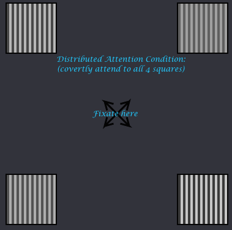
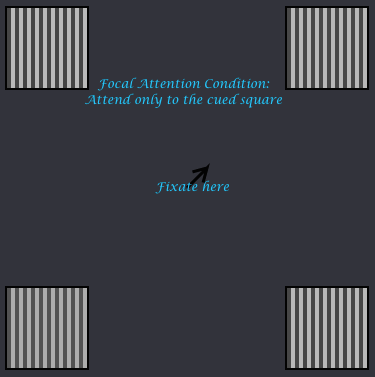

Week 5: thought question demo
Instructions
This week's thought questions involves participating in an experiment that was originally conducted in 2011 by Franco Pestilli, Professor Gardner, and their colleagues. This type of experiment is known as a 2-interval forced choice task.
You will see four squares with bars inside. These will flash twice quickly -- your job is to judge for one of the squares which of those two intervals had higher contrast (i.e. which had brighter white bars and darker black bars). On some trials, you will be cued to pay attention to all of the squares (distributed attention) and on some trials you will be cued to pay attention to only one of the squares (focal attention). After the two flashes the arrow will indicate just one square, which you should respond about. Press 1 to indicate that the contrast was higher for that square in the first flash or 2 if the contrast was higher in the second flash. Press the q key to start each trial.
Below are two example screenshots of one interval of the flashes you will observe. Make sure you are fixating your eyes at the center and covertly attend to either the cued square or to all 4 squares, depending on the direction of the arrows. Note the differences in contrast in each square also for examples of what higher vs lower contrast stimuli will look like.
 1 = higher contrast first interval, 2 = higher second interval
Write down this information, you will need it for the thought question and in section this week!